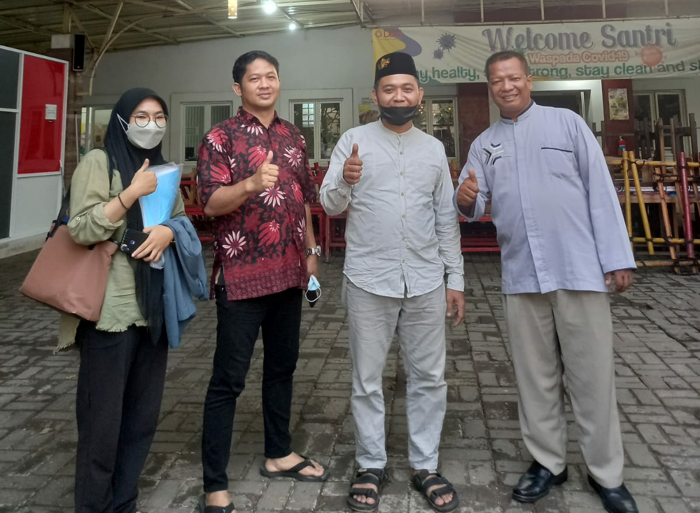

Jakarta – NU Care-LAZISNU Cengkareng
mengapresiasi ide dari Gerakan Indonesia Optimis soal ketahanan pangan nasional.

Ide-ide GIO disampaikan dalam kegiatan deep talk Indonesia dalam serial Ramadan sesi ke-III pada Kamis, 21 April 2022.
GIO yang diketuai DR Ngasiman Djoyonegoro dianggap sukses menyelengagrakan kegiatan tersebut. Idenya soal ‘Arah Ketahanan Pangan Nasional Pasca Pandemi COVID-19’ diapresiasi dan sukses.
Ngasiman dalam acara itu mengatakan bahwa Indonesia kaya sumber daya alam. Harusnya kekayaan ini bisa menjaga stabilitas ketahanan pangan.
“Pangan merupakan kebutuhan dasar utama bagi manusia yang harus dipenuhi setiap saat. Hak untuk memperoleh pangan merupakan salah satu hak asasi manusia,” kata Ngasiman.
Kebutuhan pangan adalah hak dasar dan hak asasi manusia. Pangan memiliki arti dan peran penting bagi kehidupan bangsa. Ketersediaan pangan yang lebih kecil dibandingkan kebutuhannya dapat menciptakan ketidak-stabilan ekonomi. Berbagai gejolak sosial dan politik dapat juga terjadi jika ketahanan pangan terganggu.
“Kondisi pangan yang kritis ini bahkan dapat membahayakan stabilitas ekonomi dan stabilitas nasional,” katanya.